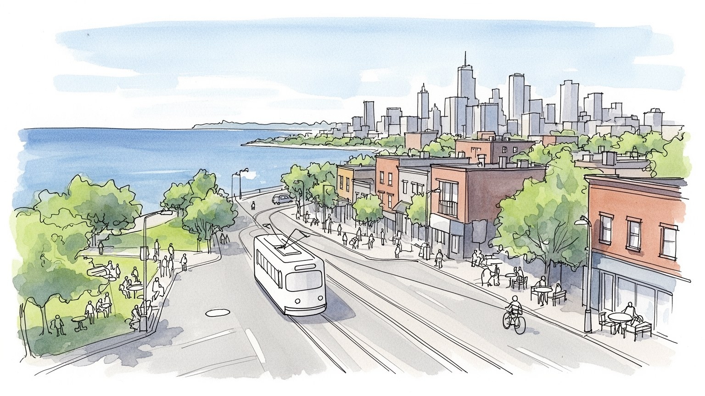
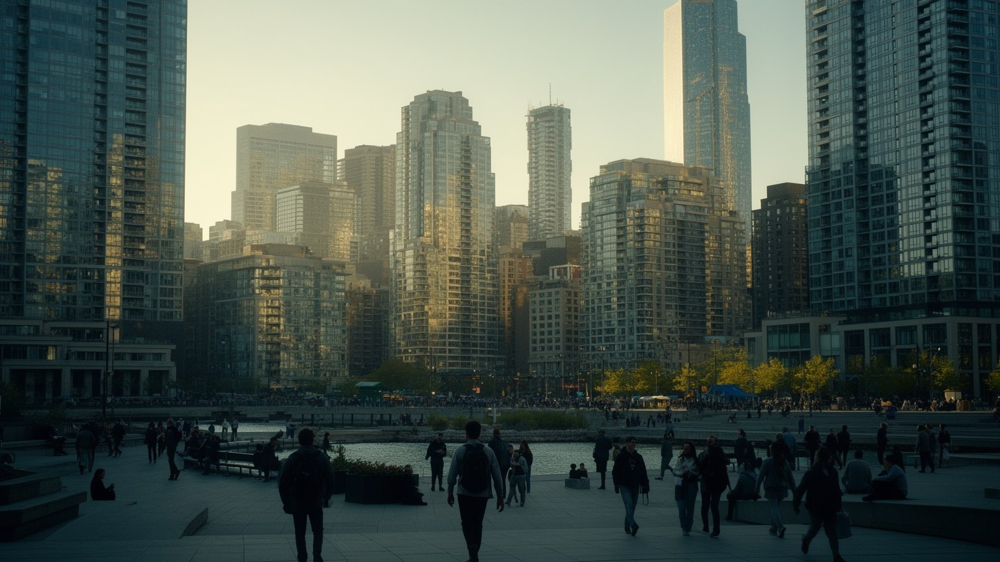
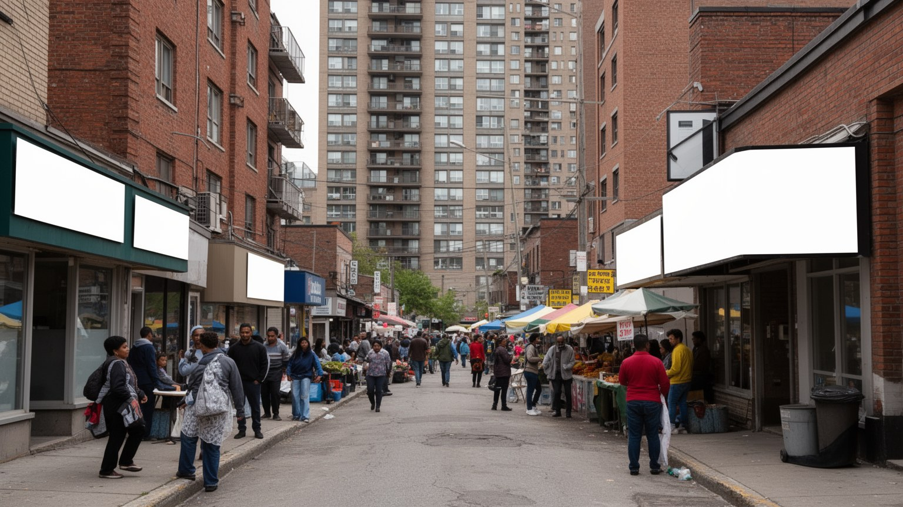
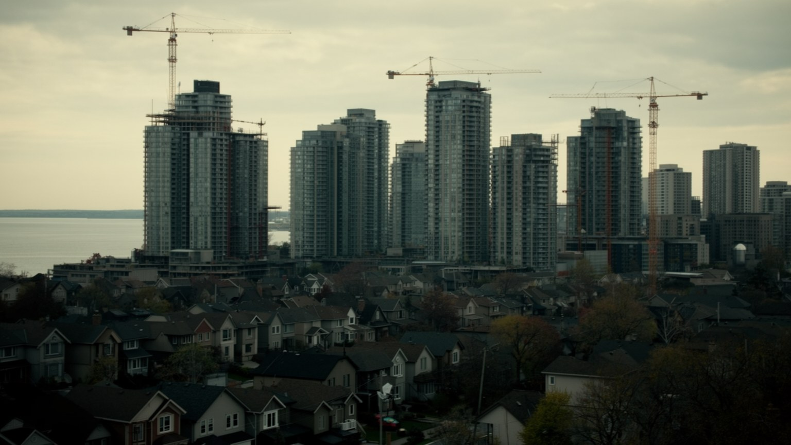
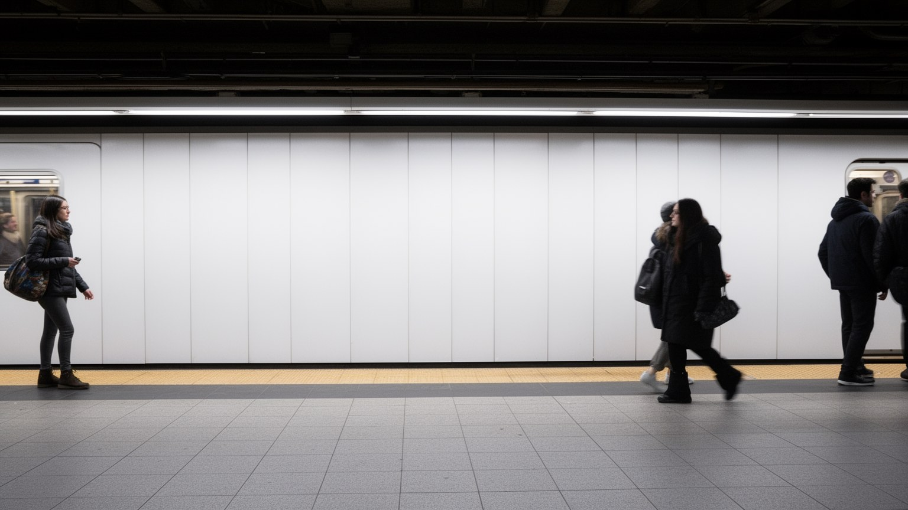
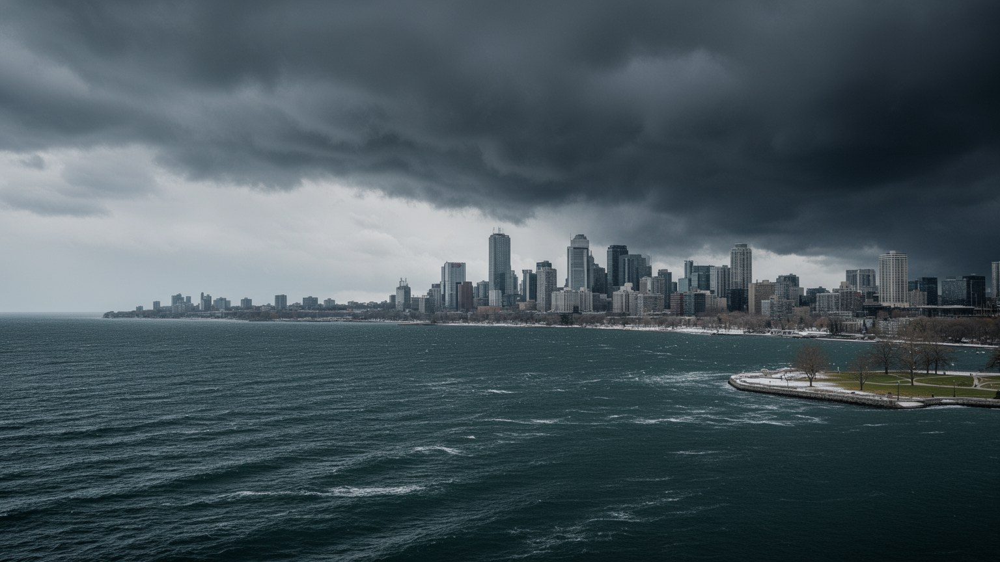
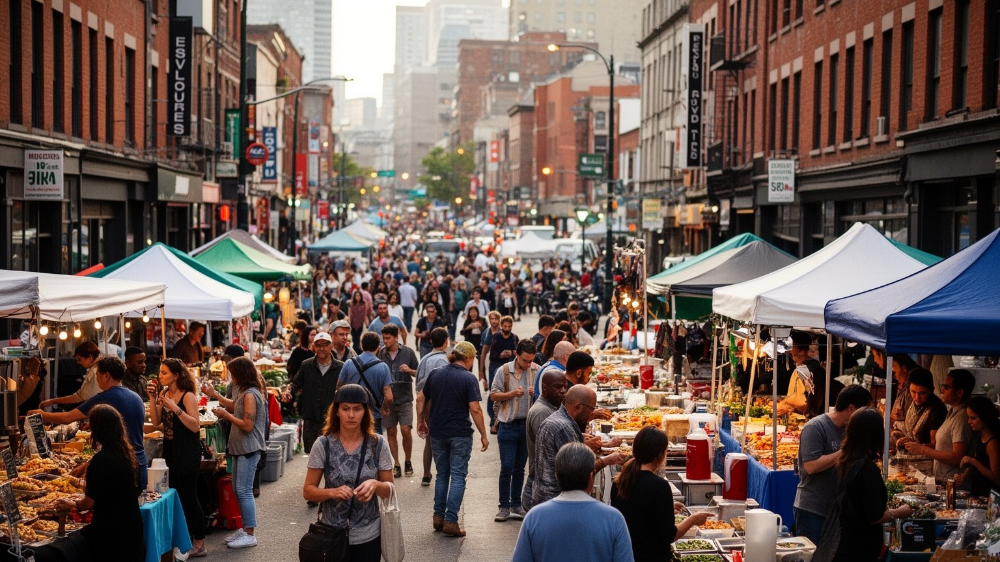
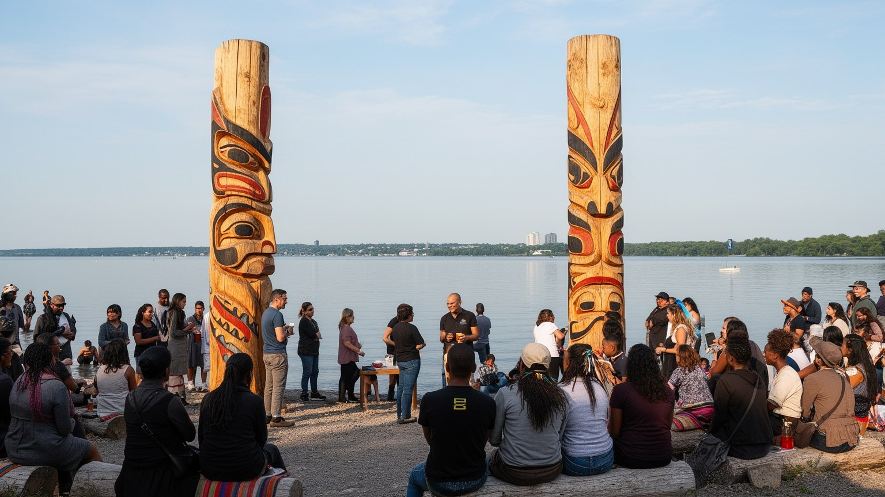
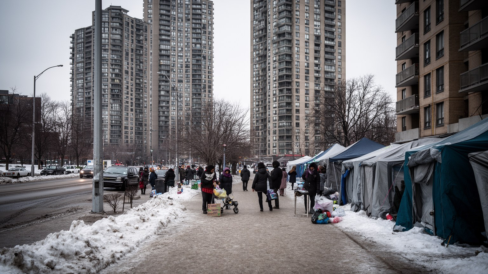
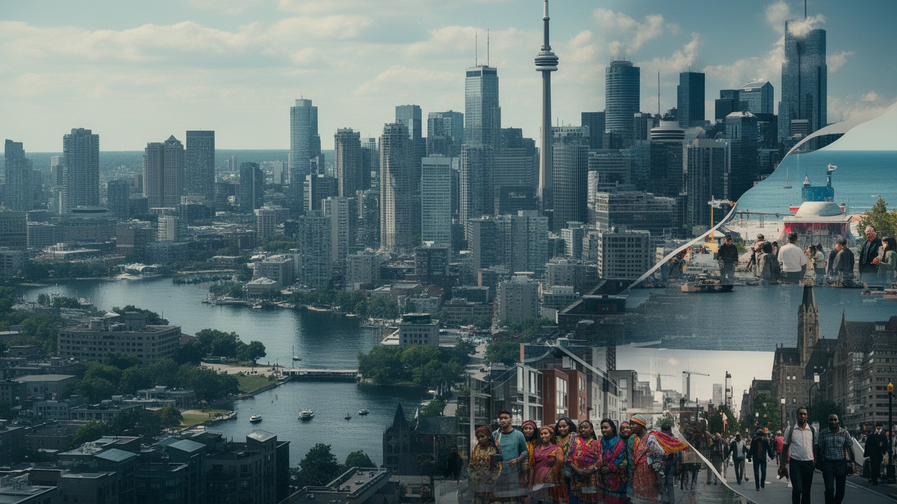

地政学
トロントは首都ではないが、カナダ最大都市として金融、移民、メディア、航空、大学を束ねる。五大湖圏と米国北東部に近く、英仏二言語国家の中で多文化主義を実務化する入口でもある都市だ。州政治にも影響力を持つ。

🇨🇦 カナダ / 北米 / World City Atlas
金融、移民、大学研究、映画、湖岸の都市開発、住宅難、先住民の記憶、多文化の日常が重なるカナダ最大の大都市。
都市の骨格
トロントはカナダ経済の中枢でありながら、移民の到着地、研究都市、映画制作地、湖岸の生活都市でもある。豊かさは住宅費と格差の圧力を同時に生んでいる。

トロントは首都ではないが、カナダ最大都市として金融、移民、メディア、航空、大学を束ねる。五大湖圏と米国北東部に近く、英仏二言語国家の中で多文化主義を実務化する入口でもある都市だ。州政治にも影響力を持つ。
銀行、保険、年金基金、大学研究、病院、映画、建設、物流、飲食が雇用を生む。高技能の専門職と、介護、清掃、配達、厨房、建設を担う移民労働が近くで働き、賃金差が街に表れる。労組の交渉も暮らしを守る力だ。
英語圏文化、カトリック、プロテスタント、ユダヤ教、イスラム教、ヒンドゥー教、シク教、仏教、カリブや東アジアの祭礼が並ぶ。食、音楽、映画、スポーツが多文化の日常を作る都市である。礼拝所も地区の拠点だ。
湖畔、島々、市場、博物館、CNタワーは訪れやすいが、家賃高騰、長い通勤、ホームレス、寒さ、交通混雑も暮らしを重くする。観光の明るさと生活費の圧力が同じ街路にある。冬の移動と住宅費が日常を大きく左右する。

トロントの都心は、カナダ経済の意思決定が集まる場所である。銀行、保険会社、年金基金、証券取引、法律事務所、会計、コンサルティング、広告、通信、行政機関が地下道と高層ビルで結ばれ、国内の資本を鉱業、エネルギー、住宅、インフラ、技術企業へ流している。金融街は清潔で効率的に見えるが、その働きはカナダの資源経済、住宅ローン、移民の貯蓄、退職年金、先住民の土地問題とも切り離せない。昼間のスーツ姿だけでなく、早朝の清掃員、フードコートの調理人、警備員、地下鉄で通う事務職、夜に帰る保育者までが都心を動かす。巨大な資本が集まるほど、都市の地価と家賃は上がり、金融の成功が生活の重さに変わることもある。さらに都心の働き方は在宅勤務、空室率、地下街の小売、昼食需要にも左右され、パンデミック後のオフィス街は以前より複雑な時間を持つようになった。トロントの都心を読むには、ガラスの塔の表面だけでなく、地下通路、駅、銀行の融資、年金基金の投資先、住宅価格の連動を見る必要がある。金融は抽象的な数字ではなく、住民が家を買えるか、公共交通が整うか、街にどんな雇用が残るかを左右する都市の力である。投資が地域の住宅や交通に戻る時だけ、都心の富は広い都市圏の生活を支える。数字の中心地であるほど、公共への還元が厳しく問われる。

トロントは世界中から到着した人びとによって形づくられてきた都市である。イタリア系、ポルトガル系、ギリシャ系、ユダヤ系、カリブ系、中国系、韓国系、南アジア系、中東系、フィリピン系、アフリカ系の商店街や住宅地が、中心部から郊外まで多層に広がる。移民地区は観光用の異国情緒ではなく、送金、礼拝、学習支援、資格取得、保育、食品調達、仕事探し、家族の再会を支える生活の基盤である。多文化主義はカナダの理念として語られるが、実際には英語能力、学歴認証、差別、低賃金労働、住宅探し、在留手続きの不安と日々向き合う制度でもある。新しい移民が開いた食堂や小売店は街を豊かにする一方、人気地区になると家賃が上がり、最初に地域を支えた世帯が遠くへ押し出される。郊外のモール、寺院、グロサリー、塾、診療所は、中心部の観光地よりも移民都市の現実をよく示すことがある。トロントの移民性を読むには、祭りや料理だけでなく、学校の通訳、夜勤の工場、介護の仕事、宗教施設、郊外バスの混雑を見る必要がある。多様性は標語ではなく、役所、職場、住まい、近所の会話で毎日作り直される実務である。第二世代の若者が複数の言語と帰属を持ちながら進学し、働き、表現する姿も、この都市の未来を形づくっている。歓迎の制度が弱まれば、多文化の強みは不安定な労働へ変わってしまう。

トロントの暮らしで最も切実な課題は住宅である。湖岸と都心の周辺には高層コンドミニアムが林立し、駅前や再開発地では新しい住宅が次々に建つ。それでも家賃と住宅価格は多くの世帯に重く、若い専門職、学生、移民家族、単身高齢者、低所得労働者は狭い部屋、遠い郊外、ルームシェア、長い通勤を選ばざるを得ないことがある。住宅は投資商品として国際資本を引き寄せる一方、住まいとしては保育園、学校、スーパー、診療所、公園、交通と結びつく生活の土台である。古い戸建て地区の保護、密度の高い住宅供給、賃貸規制、公共住宅、ホームレス支援、開発利益の還元をどう組み合わせるかが都市政治の焦点になっている。高層コンドはスカイラインを作るが、管理費、狭さ、コミュニティの薄さ、日影、風、公共空間の不足も伴う。建設が続いても、家族向けの広さ、手頃な賃貸、障害者が住みやすい部屋、長期に住める契約が不足すれば、供給の数字だけでは不安は減らない。トロントの住宅を読むには、完成した塔だけでなく、建設労働者、退去通知、空室率、郊外の地下室住居、冬のシェルターまで見る必要がある。都市の成功は、高価な眺望ではなく、普通の仕事をする人が安全に住み続けられるかで測られる。住まいを守る政策は景観論ではなく、教育、健康、雇用を支える最前線である。家は都市参加の入口だ。
トロントは金融だけでなく、大学と医療研究の都市でもある。トロント大学、ライアソンから改称したトロント・メトロポリタン大学、ヨーク大学、専門学校、研究病院、スタートアップ支援施設が集まり、医学、人工知能、都市政策、公共衛生、工学、芸術の人材を育てる。病院と大学は高度な治療、臨床研究、留学生、研究費、企業連携を呼び込むが、同時に清掃、給食、受付、介護、警備、実験補助、学生アルバイトの仕事に支えられている。知識産業の成功は都市の評価を高める一方、学生の家賃、研究者の短期契約、留学生の孤立、医療現場の過重労働も生む。キャンパスは都心の公共空間として開かれているが、周辺の地価を押し上げ、近隣住民との関係を調整する責任もある。人工知能や生命科学の企業が成長すると、研究成果は雇用を作る一方で、データ倫理、医療格差、知的財産、公共研究の役割をめぐる議論も強まる。トロントの大学を読むには、研究成果や病院の名声だけでなく、図書館の席、寮の不足、通学時間、奨学金、地域診療、移民の医療アクセスを見る必要がある。知識は建物の中で生まれるが、それを支える生活費、制度、ケアの労働がなければ都市には根づかない。研究都市の競争力は、優秀な人を呼ぶだけでなく、その人が長く暮らせる条件を整えることで保たれる。学びの場も住宅市場から自由ではない。

トロント都市圏は、地下鉄、路面電車、バス、GOトランジット、空港、高速道路によって広く結ばれている。都心で働く人、郊外の物流施設へ向かう人、大学へ通う学生、病院の夜勤者、観光客は同じ駅や道路を使うが、移動の条件は平等ではない。住宅費が上がるほど人びとは遠くへ住み、通勤時間、運賃、乗り換え、遅延、冬の待ち時間が生活を圧迫する。トロントの路面電車は街の象徴であり、徒歩圏の都市生活を支えるが、道路混雑や工事の影響も受けやすい。近郊鉄道の拡充、地下鉄延伸、バス優先、空港アクセス、自転車道、歩道の安全は、単なる交通政策ではなく住宅と雇用を結ぶ社会政策である。高速道路中心の郊外開発は便利さを作った一方、自動車を持たない世帯や低所得者を不利にしてきた。新線計画が遅れれば、成長する住宅地や移民の多い郊外は混雑したバスに頼り続けることになる。交通機関の安全感や清潔さも利用を左右し、夜間に働く人や女性、高齢者、障害者には特に重い条件になる。トロントの交通を読むには、路線図ではなく、早朝のバス停、駅のエレベーター、雪の日の歩道、運賃の負担、郊外の駐車場を見る必要がある。都市の距離はキロメートルではなく、誰がどれだけの時間と費用で移動できるかによって決まる。駅前の密度、バスの本数、歩道の除雪は、都市圏の公平さを毎日測る細部である。

トロントはオンタリオ湖に面する都市であり、湖は景観、気候、交通、余暇、環境リスクを同時に作る。夏の湖岸は散歩、サイクリング、島への船、ビーチ、フェスティバルでにぎわい、冬には冷たい風と凍結が街の動きを変える。湖は気温を和らげる働きを持つが、湿気、霧、湖雪、強風、高潮、洪水、岸辺の浸食ももたらす。かつて工業や港湾に使われた水辺は、公園、住宅、文化施設、観光地へ再編されてきたが、きれいな遊歩道の背後には水質改善、埋立地の管理、排水、先住民の土地の記憶、気候変動への備えがある。湖岸の再開発は都市の魅力を高める一方、公共アクセスが狭まり、高価な住宅と観光施設に偏る危険もある。熱波の季節には木陰や水辺の近さが健康を守り、豪雨の季節には下水、緑地、低地の住宅が都市の弱点を示す。島々への船や水上の公園は、都心の近くで息をつける公共空間として大きな意味を持つ。トロントの湖を読むには、CNタワーからの眺めだけでなく、排水口、港湾施設、島の住民、釣り人、洪水対策、公園の木陰を見る必要がある。水辺は余暇の背景ではなく、都市の健康、気候適応、記憶、公共性を支える基盤である。湖に開かれた都市であるほど、水との距離を誰に開くのかが問われる。気候への備えは将来の課題ではなく、夏と冬の街路で毎年確かめられる生活条件である。

トロントの文化は、博物館や劇場だけでなく、食堂、市場、教会の地下ホール、寺院、モスク、スポーツバー、学校の体育館、夏の通り祭りに現れる。チャイナタウン、リトルイタリー、グリークタウン、リトルインディア、カリブ系の祭礼、韓国料理店、エチオピア料理、ベトナムの麺店、ユダヤ系のベーカリー、ハラール食材店は、移民の歴史と新しい世代の感覚を混ぜている。食は都市の多様性を楽しく示すが、厨房の低賃金、長時間労働、家賃上昇、営業許可、食材の輸入、家族経営の継承問題も抱える。音楽、演劇、文学、スポーツ、コメディ、クラブ文化は、英語圏のメディア市場と移民の言語を行き来しながら広がる。多文化都市では、違いを祝うイベントが重要である一方、日常の差別や孤立を隠してしまうこともある。ラプターズやブルージェイズの試合日には、スポーツもまた世代や出身地を越えて都市の会話を作る。トロントの文化を読むには、フェスティバルの華やかさだけでなく、店主の家賃、礼拝の時間、若者の表現、地域図書館、夜の公共交通まで見る必要がある。文化は都市の飾りではなく、人びとが居場所を作り、記憶を分け合い、次の世代へ言葉を渡す方法である。通りの店や小さな舞台が残るかどうかは、多文化の厚みを守る条件でもある。味の多さは、都市が受け入れてきた移動の歴史そのものでもある。

トロントを理解するには、現在の金融都市や移民都市の姿だけでなく、先住民の土地の記憶を見なければならない。この地域は長く先住民の移動、交易、漁労、狩猟、集会の場所であり、川、湖岸、港、台地にはヨーロッパ植民以前からの関係が刻まれている。都市の名前、土地譲渡、条約、居住学校、同化政策、都市へ移った先住民の生活、医療や教育の格差は、現代の街路にもつながる問題である。公共施設の土地承認文や記念碑は意識を広げるが、言葉だけでは十分ではない。住宅、就労、文化施設、言語継承、健康支援、警察との関係、芸術家の活動を通じて、先住民の住民が都市の中で安全に暮らせるかが問われる。博物館や大学が資料を保存するだけでなく、返還、共同研究、教育、儀礼の場をどう整えるかも重要になる。都市開発で掘り返される土地や川沿いの整備にも、記憶を扱う慎重さが求められる。トロントの湖岸や川辺を歩く時、そこは単なる再開発地ではなく、水と土地をめぐる長い関係が重なる場所である。先住民の記憶を読むことは、過去を付け足す作業ではなく、都市の正当性、所有、公共空間の使い方を問い直すことである。多文化都市としての誇りは、植民地化の歴史と向き合う制度があって初めて深くなる。和解という言葉が生活の制度に変わるかどうかが、都市の倫理を測る課題だ。
トロントは北米の重要な映画、テレビ、音楽、出版、デジタルメディアの拠点である。国際映画祭は世界の作品、配給会社、批評家、スター、観客を集め、街を一時的に巨大な上映空間へ変える。制作スタジオ、編集、音響、衣装、美術、照明、俳優、エキストラ、ロケ管理、ホテル、飲食、交通は、文化産業として多くの雇用を生む。トロントはしばしば他の北米都市の代役として撮影されるが、そのこと自体が街の多様な景観と産業の柔軟さを示している。メディア都市であることは華やかに見える一方、フリーランスの不安定さ、長時間労働、組合交渉、住居費、表現の多様性、公共放送の役割をめぐる課題もある。映画祭の赤いじゅうたんだけでは、早朝の撮影準備や編集室の締め切り、若い制作者の家賃は見えない。ニュース産業は多文化社会の言語、政治、差別、住宅問題を伝える役割を持つが、広告収入の低下やプラットフォーム依存で地域報道は揺れている。トロントのメディアを読むには、劇場の光、大学の映像学科、移民コミュニティのラジオ、スポーツ中継、ニュース編集部、ストリーミング企業の労働を同時に見る必要がある。都市は撮られる対象であるだけでなく、自分自身をどの物語として世界へ送るかを選ぶ制作現場でもある。誰が物語を作り、誰の声が聞こえるかが、メディア都市の公共性を決める。

トロントは豊かで安全な都市として知られるが、社会格差は深い。金融街と高級住宅地、湖岸の新築コンド、大学病院の近くに、ホームレス、食料不安、低賃金労働、若者の失業、薬物依存、精神医療の不足、難民申請者の不安、郊外の貧困が並んでいる。移民が多い都市では、到着直後の言語、資格、住居、仕事の壁が生活を不安定にしやすい。人種差別や警察との緊張、先住民や黒人コミュニティへの偏り、学校や医療のアクセス差も無視できない。冬の寒さは路上生活者に命の危険をもたらし、シェルター、公共住宅、メンタルヘルス、依存症支援、低家賃住宅の不足を厳しく照らす。成長する都市ほど税収と民間投資は増えるが、その利益が誰の住まい、交通、ケア、教育へ戻るのかが問題になる。中心部から遠い高層団地では、買い物、保育、診療、就職支援が不足し、都市の豊かさから切り離された生活が生まれやすい。トロントの格差を読むには、統計だけでなく、フードバンクの列、郊外の高層団地、夜勤の介護者、学校の朝食支援、図書館の温かい席を見る必要がある。多文化と繁栄を誇る都市であるほど、見えにくい困窮に手を届かせる制度の厚みが問われる。格差対策は慈善だけでなく、住宅、賃金、交通、医療を結ぶ都市運営の核心である。豊かさの配分が都市の信頼を決める基盤にもなるのだ。

トロントを読むことは、カナダ最大都市という分かりやすい肩書きを、金融、移民、住宅、大学、交通、湖、記憶、文化、格差の層へほどくことである。都心の高層ビルは資本と専門職の力を示し、移民地区の商店や礼拝所は世界とつながる生活の回路を見せる。大学と病院は知識とケアを生み、映画祭やスポーツは都市のイメージを外へ送る。オンタリオ湖は余暇と気候リスクを同時にもたらし、先住民の土地の記憶は都市の成立を問い直す。だが成功の裏側には、家賃高騰、長い通勤、低賃金労働、ホームレス、差別、公共サービスの不足がある。トロントの強さは、多様な人びとを受け入れ、制度を更新しながら成長してきた点にある。一方で、その多様性が単なる都市ブランドにとどまるなら、生活の不平等は深まる。訪れる人には湖畔と塔と食の楽しい都市に見えるが、住民には家探し、学校、通勤、寒さ、医療、言語の課題が毎日続く。ここではカナダの寛容さ、北米経済の競争、植民地化の記憶、気候への備えが一つの都市圏で接している。複数の層を同時に見る時、トロントは北米の移民都市が抱える可能性と限界を最もよく映す都市の一つとして立ち上がる。都市の価値は、塔の高さよりも、異なる背景の人が同じ公共空間と制度を信頼できるかに現れる。成長を生活の安心へ変えられるかが、次の課題である。